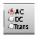
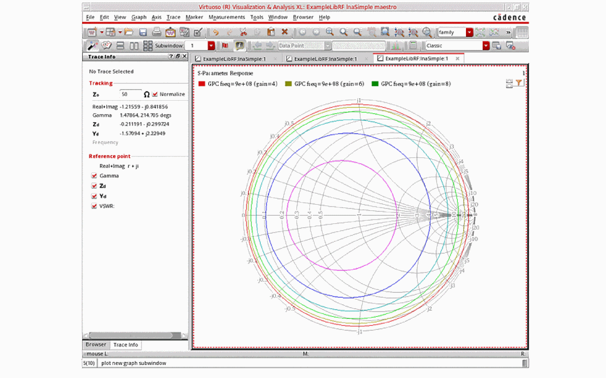
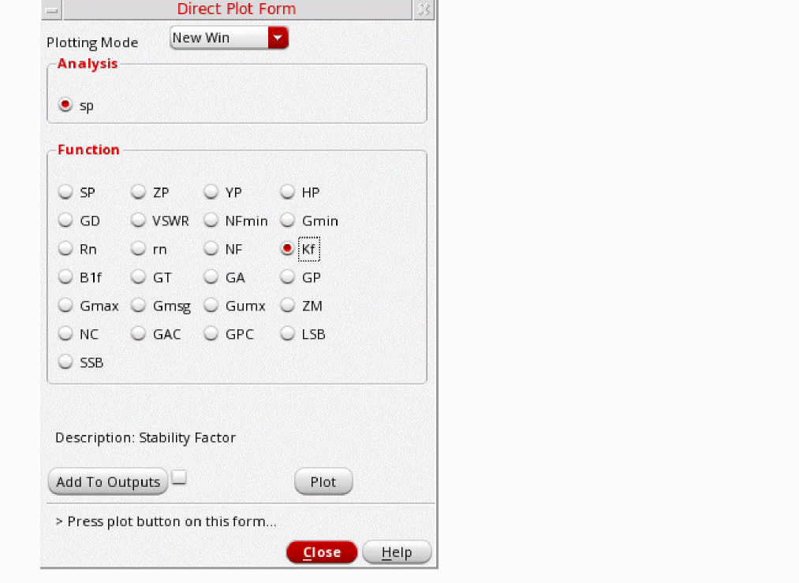
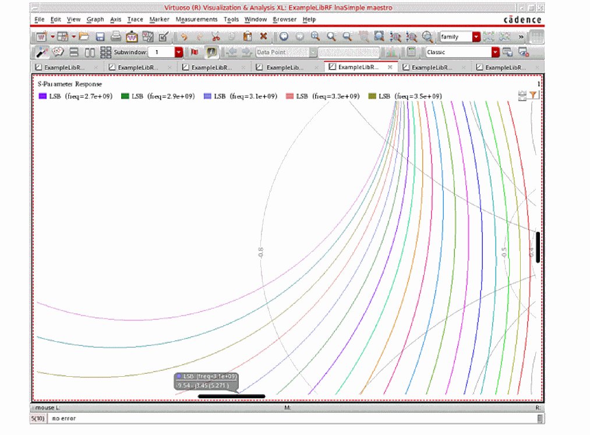
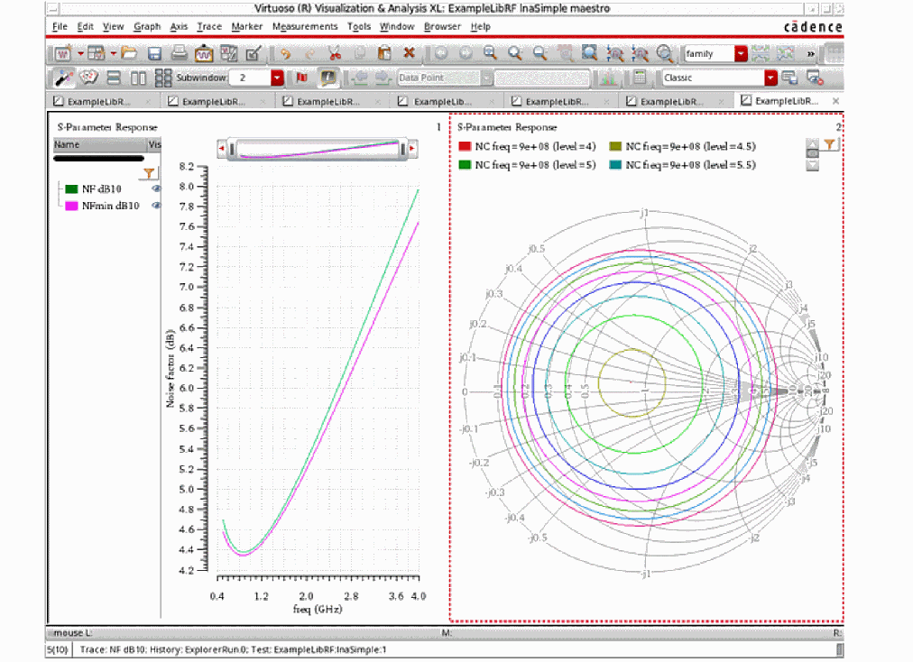
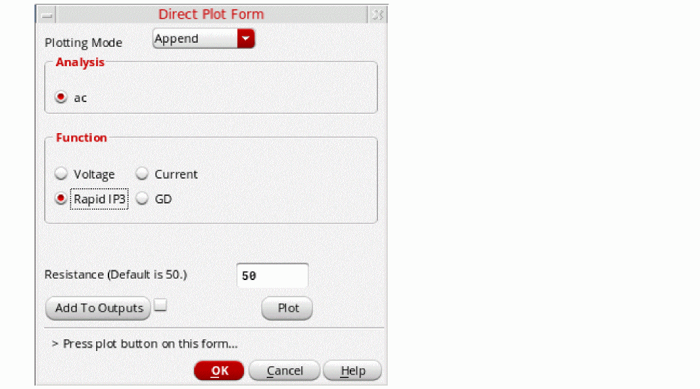
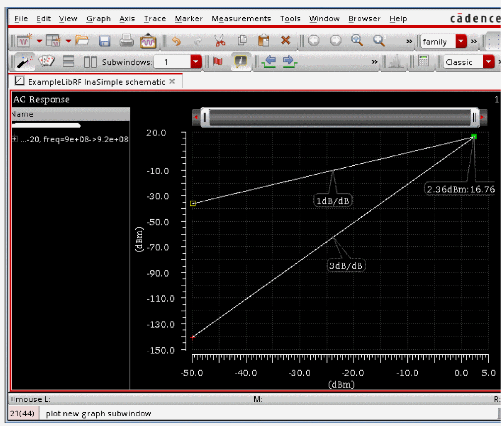

2
Simulating Low Noise Amplifiers
The SpectreRF simulator can simulate very linear circuits, such as Low Noise Amplifiers (LNA). This section uses the lna Simple circuit to illustrate how the SpectreRF simulator can determine the characteristics of an LNA design.
The first stage of a receiver is typically an LNA, whose main function is to set the boundary as well as to provide enough gain to overcome the noise of subsequent stages (for example, in the mixer and IF Amplifier). Apart from providing enough gain in addition to introducing as little noise as possible, an LNA should accommodate large signals without distortions, offer a large dynamic range, and provide good matching to its input and output. Good matching is extremely important if a passive band-select and image-reject filter precedes and succeeds the LNA because the transfer characteristics of many filters are sensitive to the quality of the termination.
In the LNA example that follows, you will plot the following characteristics of the low noise amplifier.
| LNA Measurements (lnaSimple | Analyses |
|---|---|
sp |
|
sp |
|
sp+noise |
|
hb |
|
ac |
To use this section, you must be familiar with the SpectreRF simulator analyses as well as know about LNA designs. For more information about the SpectreRF simulator analyses, refer to the various chapters in this user guide and also the SpectreRF Simulation Option Theory.
The lnaSimple Low Noise Amplifier Circuit
The lnaSimple circuit can be found in the ExampleLibRF library. Refer to the Introduction chapter for the instructions on accessing the ExampleLibRF library. The schematic for the lnaSimple circuit is shown below. It is a differential low noise amplifier.
Figure 2-1 Schematic for the lnaSimple Low Noise Amplifier

The following tables list some measured values for different aspects of the lnaSimple low noise amplifier.
| Design Variable | Default Value |
|---|---|
prf (RF power) |
-10 dBm |
frf1 (RF frequency) |
900M |
Setting Up to Simulate the lnaSimple Low Noise Amplifier
Opening the lnaSimple Circuit in the Schematic Window
-
In CIW, choose File – Open.
The Open File form is displayed. - Choose ExampleLibRF from the Library drop-down list.
- Choose lnaSimple from the Cells list box.
-
Choose schematic from the View drop-down list.
The completed Open File form will look like the one below.
Figure 2-2 Open File Form -
Click OK.
The Schematic window for the lnaSimple circuit is displayed.
Figure 2-3 lnaSimple Schematic - In the Schematic window, choose Launch– ADE Explorer.
-
In the Launch ADE Explorer dialog, select Create New View.
The Create new ADE Explorer view form is displayed.
Figure 2-4 Create new ADE Explorer view -
Leave each option to the default selections and click OK.
The Virtuoso ADE Explorer window is displayed, as shown below.
Figure 2-5 ADE Explorer Window
Choosing Simulator Options
-
Choose Setup – Simulator in the ADE Explorer
The Choosing Simulator form is displayed.
Figure 2-6 Choosing Simulator Form - Choose spectre from the Simulator drop-down list.
- Click OK.
-
Now, set up the High-Performance Simulation Options, as follows:
In ADE Explorer, select Setup-High Performance Simulation. The High Performance Simulation Options window is displayed.
Figure 2-7 High Performance Simulation OptionsIn the High Performance Simulation Options window, select APS for Simulation Performance Mode. Note that Auto is selected for Multithreading options. The effect of this is to detect the number of cores on the system (up to 64) and then multi-thread on all the available cores.The bigger the circuit, the more threads you should use. For a small circuit such as this, you may want to set the number of threads to 2. Using 16 threads on a small circuit might actually slow things down because of the overhead associated with multithreading. For more information, refer to the Spectre Classic Simulator, Spectre APS, Spectre X, and Spectre XPS.Click OK. -
In ADE Explorer, select Outputs – Save All.
The Save Options form is displayed.
Figure 2-8 Save Options Form -
In the Select signals to output(save) section, ensure that allpub is selected.
This is the default selection. This saves all of the node voltages at all levels of the hierarchy, but it does not include the node voltages inside the device models.
To save the currents, select nonlinear in the Select device currents (currents) section if you just want to save the device currents, or select all if you want to save all the currents in the circuit. - Click OK to close the Save Options form.
Setting Up Model Libraries
-
In ADE Explorer, choose Setup - Simulation Files. The Simulation Files Setup form is displayed.
Figure 2-9 Simulation Files Setup Form
- Verify that the Include Path is set, as shown above, and click OK to close the form.
-
In ADE Explorer, choose Setup – Model Libraries.
The Model Library Setup form is displayed. -
Type in the name of the model file, as follows:
models/modelsRF.scs -
Click Add.
The Model Library Setup form will look like the following:
Figure 2-10 Model Library Setup - Click OK.
SP Analysis and Small Signal Gain
The S-Parameter (sp) analysis is the most useful linear small signal analysis for low noise amplifiers. In this section, you will set up an sp analysis by specifying the input and output ports and the range of sweep frequencies.
The S-parameter analysis linearizes the circuit about the DC operating point and computes the S-parameters of the circuit taken as an N-port. In the netlist, the port statements define the ports of the circuit. Each active port is turned on sequentially, and a linear small-signal analysis is performed. Spectre converts the response of the circuit at each active port into S-parameters and outputs these parameters. There must be at least one active port statement in the circuit.
Three power gain definitions appear in the literature and are commonly used in LNA design.
The following gain quantities are valid only for two-port circuits:
- GA (available gain) is the power gain obtained by optimally matching the output of the network.
- GP (power gain) is the power gain obtained by optimally matching the input of the network.
- GT (transducer gain) shows the insertion effect of a two-port circuit. This quantity is used in amplifier design.
Besides these three gain definitions, there are three additional gain definitions you can use to evaluate the LNA design.
- Gumx (maximum unilateral transducer power gain)
- Gmax (maximum available gain) shows the transducer power gain when a simultaneous conjugate match exists at both ports.
-
Gmsg (maximum stable gain) shows the gain that can be achieved by resistively loading the two-port such that
k = 1and then simultaneously conjugately matching the input and output ports. For conditionally stable two-ports, you can approach the maximum stable gain as you reduce the input and output mismatch. If you attempt a simultaneous conjugate match andk < 1, the two-port oscillates.
There are also two gain circles that are helpful to the design of input and output matching networks.
The next steps will walk you through these simulations and measurements.
Editing the Schematic
-
In the Schematic window, click the RF voltage source. This is the input port to lnaSimple.
Figure 2-11 RF Voltage Source in lnaSimpleNote that when you select the port, the Property Editor populates with the instance properties on the port. Note that the RF port has a Port Number of 1 and input Resistance of 50 Ohms. Leave the Source type parameter set tosineand disable the frequency source in the Design Variables section of ADE Explorer -
Next, click the port on the right side of the schematic. This is the output port of lnaSimple. The Property Editor shows the instance properties on the output port.
Figure 2-12 lnaSimple Output PortNote that the output Port Number is 2 and the reference Resistance (real part of the reference impedance) is 50 Ohms. The Source type is set to dc, as there is no large signal generated on this port.
Setting Design Variables
Perform the following steps to set the design variables to the values required for each simulation. The Design Variables section is located in the Setup pane of the ADE Explorer simulation window:
Figure 2-13 Design Variables Section of ADE Explorer Window
-
Change the design variables frf1 and frf2 to
0. To edit the value, simply click the value to the right of the variable name, and type in a value. Then press Enter. Setting the input frequency to 0 disables the production of waveforms for the large-signal analyses like tran, pss, and hb (harmonic balance.)
Figure 2-14 Edited Design Variables Section of ADE Explorer WindowThe small-signal analysis begins by linearizing the circuit about an operating point. By default, this analysis computes the operating point, if it is not known, or recomputes it if any significant component or circuit parameter has changed. -
In the ADE Explorer window, select Analysis - Choose or click the Choosing Analyses icon ()on the right side of the ADE Explorer window.
The Choosing Analyses form is displayed.Figure 2-15 Choosing Analyses Form
-
In the Analysis section, select the sp radio button. The form expands.
Figure 2-16 sp Choosing Analyses Form
-
In the Ports section, click Select. Next, click the input (RF) port, followed by the output port (PORT0). When finished with the two selections, press the Esc key. The form and schematic will look like the following:
Figure 2-17 Choosing Analyses Form with Ports SelectedIf the list of active ports is specified with in the Ports field, the ports are numbered sequentially from one in the order given. Otherwise, all ports present in the circuit are active, and the port numbers used are those that were assigned on the port statements in the netlist (or in the Edit Properties form).
Spectre can perform AC/SP analysis while sweeping a parameter. The parameter can be frequency, temperature, component instance parameter, component model parameter, or netlist parameter. If changing a parameter affects the DC operating point, the operating point is recomputed at each step. After the analysis is complete, the modified parameter returns to its original value.
You can define sweep limits by specifying the end points or the center value and span of the sweep. Steps can be linear or logarithmic, and you can specify the number of steps or the size of each step. If you do not specify a step size parameter, the sweep is linear when the ratio of stop to start values is less than 10 and logarithmic when this ratio is 10 or greater. All frequencies are in Hertz. - You will be sweeping frequency in this simulation. In the Sweep Variable section of the Choosing Analyses form, select Frequency (this is the default value).
- In the Sweep Range section, select Start-Stop. Enter 500M in the Start field and 4.0G in the Stop field.
- Set Sweep Type to Linear. Select Number of Steps and set that to 50.
-
In the Do Noise field, select yes. This sets up the small signal (linear 2 port) noise analysis. The small signal assumption is valid when the input power level is low (at least 10dB below the 1dB compression point) and the circuit is operating in the linear range.
Whendonoise=yesis specified, the noise correlation matrix is computed. If in addition, the output is specified using Output probe (oprobe), the amount that each noise source contributes to the output is computed. Finally, if an input is also specified (iprobe), the two-port noise parameters are computed (F, Fmin, NF, NFmin, Gopt, Bopt, and Rn). When an input port is specified, the two-port noise parameters are computed (F, Fmin, NF, NFmin, Gopt, Bopt, and Rn). - Click Select to the right of Output port and click the output port (PORT0) in the schematic.
-
Click Select to the right of Input port and click the input port in the schematic (RF). Alternately, you can type
/PORT0in the Output port field and/RFin the Input port field. -
In the Mode section, select Single-Ended. If you are simulating mixed-mode parameters, select the Mixed In/Out
spectre -h spat the command prompt. -
Click OK at the bottom of the form. The Choosing Analyses form will look like the one below.
Figure 2-18 sp Choosing Analyses Form -
Click OK.
Your ADE Explorer Setup Assistant will look like the following:
Figure 2-19 ADE Explorer
Running the Simulation and Plotting the Results
Start the analyses by clicking the green arrow icon in ADE Explorer or in the Schematic Editor.
This netlists the design and runs the simulation. A SpectreRF status window is displayed (spectre.out log file). When the analysis has completed, you may iconify the status window.
-
In ADE Explorer, select Results - Direct Plot - Main Form.
Figure 2-20 Invoking the Direct Plot FormThe Direct Plot Form is displayed. Alternately, you can click the Direct Plot icon in the Schematic window.Figure 2-21 sp Direct Plot Form
- In the Direct Plot Form, leave the Plotting Mode set to Append (this is the default).
-
In the Function section, select GT (for Transducer Gain). Transducer power gain, GT, is defined as the ratio between the power delivered to the load and the power available from the source.
(2-1) Transducer Gain with Source and Load Impedances Matched
- In the Modifier section, select dB10 because you are plotting power.
-
The sp Direct Plot Form will look like the following:
Figure 2-22 sp Direct Plot Form - Click Plot.
-
In the Function section, select GA (for Available Power Gain). Available power gain, GA, is defined as the ratio between the power available from the network and the power available from the source.
(2-2) Available Gain with Ts=0
- Click Plot again.
-
In the Function section, select GP (for Power Gain). Power Gain is defined as the ratio between the power delivered to the load and the power input to the network.
-
Click Plot once more. All three gains (GT, GA, GP) plots are displayed on one window, as shown below.
Figure 2-23 Transducer, Available, and Power GainNote that GT is the smallest gain. Because the power available from the source is greater than the power input to the LNA network, the Power Gain is greater than the Transducer gain (GP > GT). The closer the two gains are, the better the input matching is. Similarly, because the power available from the LNA network is greater than the power delivered to the load , GA > GP. The closer these two gains are, the better the output matching is. The power gain GP is closer to the transducer gain GT than the available gain GA which means the input matching network is properly designed. That is, S11 is close to zero. -
In the Direct Plot Form, change the Plot Mode to New SubWin (new subwindow).
Figure 2-24 Changing Plot Mode to New SubWindow - In the Function section, select Gmax (for maximum Transducer Power Gain) and click Plot.
- Change the Plotting Mode to Append.
- In the Function section, select Gmsg (for Maximum Stability Gain), and Click Plot.
-
In the Function section, select Gumx (for maximum Unilateral Transducer Power Gain), and click Plot again.
The three waveforms are appended to the previous graph, as shown below.
Figure 2-25 Adding Maximum Available, Maximum Stable, and Maximum Unilateral Gain Plots
In the plots above, the maximum unilateral transducer power gain (Gumx) is very close to the maximum transducer power gain (Gmax) which means the reverse coupling S12 is small. The maximum stable gain (Gmsg) is the largest of the six gains plotted.
- In the ViVA waveform window, choose File -Close All Windows to close the waveform window.
-
Next, you plot the gain circles. There are two types of gain circles: Power Gain Circles and Available Gain Circles. In the Function section of the Direct Plot Form, select GAC (Available Gain Circles). The form expands.
Figure 2-26 Direct Plot Form for Available Gain CirclesAvailable Gain Circle (GAC)
Available Gain (GA) is solely a function of the source reflection coefficient ΓS . Thus, you can draw available gain contours on the Smith chart of ΓS . The location for the peak of the contour corresponds to ΓS producing the maximum available gain (GA). You can move the peak location by changing the design of the input matching network. The best location for the contour peak is at the center of the Smith chart, where ΓS=0. - In the Plot Type section, choose Z-Smith. You will be plotting Gain Circles on the Impedance Smith Chart. (Y-Smith plots on the Admittance Smith Chart).
- In the Sweep section, you can either choose Gain Level (dB) or Frequency (Hz). In this case, you will be sweeping Gain Level. The Frequency you specify depends on the operating frequency of your design. Since the lnaSimple circuit operates at 900MHz, enter that value in the Frequency (Hz) field.
-
In the Level Range (dB) section, set Start to 4, Stop to 14, and Step to 2.
The Direct Plot Form should look like the following:
Figure 2-27 Direct Plot Form for Plotting Available Gain Circles at a Constant Frequency -
Click Plot. The available gain circles are plotted in the waveform window, as shown below.
Figure 2-28 Available Gain Circles on Z-Smith ChartAs you move your cursor around one of the Available Gain Circles, notice that the Tracking Cursor will read out both the Real and Imaginary part or the reflection coefficient directly from the Smith Chart in the Tracking Info section on the left side of the Smith Chart. The impedance or admittance at that point is also shown in the Reference point values section of the Legend. -
In the Direct Plot Form, change the Plot Mode to New Window. Next, plot the Power gain circle (GPC).
Power Gain (GP) is solely a function of the load reflection coefficient ΓL. Thus, you can draw the power gain contours on the Smith chart of ΓL. The location for the peak of the contour corresponds to ΓL producing the maximum power gain (GP). You can move the peak location by changing the design of the output matching network. The best location for the contour peak is at the center of the Smith chart, where ΓL = 0. - In the sp Direct Plot Form, selectGPC in the Function section.
- In the Plot Type section, select Z-Smith (it should be the default). You will be plotting Gain Circles on the Impedance Smith Chart.
- In the Sweep section, your choices are frequency and Gain Level (dB). Choose Gain Level (dB). Since the lnaSimple operates at 900MHz, enter 900M in the Frequency (Hz) field.
-
In the Gain Level (dB) section, set Start to 4
,set Stop to 14,and Step to 2. The Direct Plot Form should look like the following:
Figure 2-29 Direct Plot Form for Power Gain Circles -
Click Plot. The power gain circles are plotted on the Smith Chart, as shown below.
Figure 2-30 Power Gain Circles
Next, you will look at circuit stability and plot Stability Circles.
Stability
After running an sp analysis, you can plot stability factor and stability circles.
Kf, the stability factor, is valid for two-port circuits only. Kf is defined as:
Figure 2-31 Equation for Kf, stability factor
The above equation is valid for small-signal stability only. Under large signal conditions, the circuit is less likely to be stable. In the presence of feedback paths from the output to the input, the circuit might become unstable for certain combinations of source and load impedances. An LNA design that is normally stable might oscillate at the extremes of the manufacturing or voltage variations, and perhaps at unexpectedly high or low frequencies. When K > 1 and D < 1, the circuit is unconditionally stable. That is, the circuit does not oscillate with any combination of source and load impedances. You should perform the stability evaluation for the S parameters over a wide frequency range to ensure that K remains greater than one at all frequencies.
- In the Function section of the sp Direct Plot form, select Kf.
-
Set the Plotting Mode to New Window.
The sp Direct Plot Form should look like the following:
Figure 2-32 Plotting Kf from the sp Direct Plot Form -
Click Plot.
The waveform window is displayed, as shown below.
Figure 2-33 Plotting Stability Factor Kf vs Input FrequencyThe stability factor Kf is greater than 1 for all frequencies viewed, indicating that the circuit is stable at these frequencies. As the coupling (S12) decreases (reverse isolation increases), stability improves. You might use techniques, such as resistive loading and neutralization to improve stability for an LNA.
Next, plot the Stability Circles. - Close the waveform window by choosing File - Close All Windows and go back to the Direct Plot Form.
- In the Function section, select LSB (Load Stability Circles). The form changes.
- In the Plot Type section, choose Z-Smith (this is the default). You will be plotting Load Stability Circles (LSB) on the Impedance Smith Chart. (Y-Smith plots on the Admittance Smith Chart).
-
In the Frequency Range (Hz) section, enter Start 500M, Stop 4G, and Step 200M. The Direct Plot form should look like the following:
Figure 2-34 Direct Plot Form for Plotting Load Stability Circles -
Click Plot. The Load Stability Circles are plotted, as shown below.
Figure 2-35 Load Stability CirclesBy default, the graph is zoomed out to show all traces. Zoom into the Smith Chart by holding down the right mouse button and dragging a square around the section of the Smith Chart you would like to view. When you release the button, the graph redraws. You can also determine which trace belongs to which frequency by clicking on the + button to the left of LSB in the upper left section of the graph legend. This is shown in the next figure.
Figure 2-36 Zoomed in Load Stability CirclesNext, you will be plotting the Source Stability Circles. - In the Function section, select SSB (Source Stability Circles). The form changes.
- In the Plot Type section, choose Z-Smith. You will be plotting Source Stability Circles on the Impedance Smith Chart.
-
In the Frequency Range (Hz) section, enter Start 500M, Stop 4G, and Step 200M. The Direct Plot Form should look like the following:
Figure 2-37 Direct Plot Form for Source Stability Circles -
Click Plot. The Source Stability Circles are plotted, as shown below.
Figure 2-38 Source Stability Circles for lnaSimpleBy default, the graph is zoomed out to show all traces. Zoom into the Smith Chart by holding down the right mouse button and dragging a square around the section of the Smith Chart you would like to view. When you release the button, the graph redraws. You can also determine which trace belongs to which frequency by clicking on the + button to the left of SSB in the upper left section of the graph legend. This is shown in the next figure.
Figure 2-39 Zoom in Source Stability CirclesWhen you release the mouse button, the plot redraws, as shown in the next figure.
Figure 2-40 Zoomed in View of Source Stability CirclesThe source and load stability circles are also useful for checking for LNA stability. The input stability circle draws the circle Γout = 1 out on the Smith chart of ΓS . The output stability circle draws the circle Γin = 1 on the Smith chart of ΓL.
The non-stable regions of the two circles should be far away from the center of the Smith chart. In fact, it is better if the non-stable regions are located outside the Smith chart circles. This is the case for both Load and Source Stability circles. - In the ViVA waveform window, select File - Close All Windows. The waveform window closes.
The next measurement you will make is Noise Figure.
Linear 2-port noise analysis (NF, NFmin) and Noise circles
For cascaded stages, the overall noise figure is mainly determined by the first amplification stage, provided that it has sufficient gain. You achieve low noise performance by carefully selecting the low noise transistor, DC biasing point, and noise-matching at the input. The noise performance is characterized by noise factor, F, which is defined as the ratio between the input signal-to-noise ratio and the output signal-to-noise ratio. For equations to Noise Figure and minimum Noise Figure, see the
You have already run the simulation for linear two-port noise as part of the sp analysis. Now, you will plot the results.
- In the sp Direct Plot Form, select NF in the Function section. The form changes.
-
In the Modifier section, select dB10 to plot Noise Figure. (If you want to plot Noise Factor instead, select Magnitude). The sp Direct Plot Form should look like the figure below.
Figure 2-41 sp Direct Plot Form for Plotting Noise Figure -
Click Plot. The noise figure is plotted, as shown below.
Figure 2-42 lnaSimple Noise Figure Plot - In the Direct Plot Form, change the Plotting Mode to Append.
- In the Function section, select NFmin. You will be plotting minimum noise figure.
-
Set the Modifier to dB10 to plot minimum noise figure. (Leave the modifier at the default value of magnitude to plot minimum noise factor).
The Direct Plot Form should look like the following figure:
Figure 2-43 sp Direct Plot Form for Minimum Noise Figure -
Click Plot to plot minimum noise figure. The noise figure is plotted, as shown below.
Figure 2-44 lnaSimple Minimum Noise FigureThe y-axis label for Noise Figure and Minimum Noise Figure both show “Noise Factor (dB)”. View the legend at the upper left side of the plot. You will see NF dB10 and NFmin dB10. This shows that noise figure (rather than noise factor) is being plotted.The Noise Figure plots are at a minimum at the frequency of operation.
Next you will plot Noise Circles. - In the Direct Plot Form, change the Plotting Mode to New SubWin.
- In the Function section, select NC. The form changes.
- In the Plot Type section, select Z-Smith. This plots the noise circles on the Impedance Smith Chart (Choosing Y-Smith plots the noise circles on the Admittance Smith Chart.)
- In the Sweep section, select Noise Level (dB). You will be plotting circles of constant noise level at a single frequency.
- In the Frequency(Hz) field, type 900M. This is the operating frequency of the lnaSimple circuit.
-
In the Level Range (dB) section, set Start to 4, Stop to 8, and Step to 0.5. The Direct Plot Form should look like the figure below.
Figure 2-45 Direct Plot Form for Noise Circles -
Click Plot. The Noise Circle plot is displayed, as shown below.
Figure 2-46 Noise Circle PlotThe optimum location for the center of the noise circle is at the center of the Smith chart. However, it is hard to center both the available gain circle, GAC, and the noise circle, NC, in the Smith chart. When you design an LNA, plot NC, GAC, and the source stability circle, SSB, together in the same plot. Use this plot to trade-off the gain, noise, and stability for the input matching network design. - Clean up the screen for the next set of measurements.
Summary
In this section, you have looked at common measurements made on Low Noise Amplifier circuits, specifically Gain, Stability, and Noise. For other examples of Measurements, see
In the next section, you will measure the 1dB Compression Point and IP3 using two different methods.
Third-Order Intercept measurement with HB (2 tone HB)
In narrowband circuits, distortion is commonly measured by applying two pure sinusoids with frequencies well within the bandwidth of the circuit (call these frequencies f1 and f2). The harmonics of these two frequencies would be outside the bandwidth of the circuit, however, there are distortion products that fall at the frequencies 2f1-f2, 2f2-f1, and so on. These frequencies are within the bandwidth of the circuit and can be used to measure the intermodulation distortion, or IMD, produced by the circuit.
IP3 is an important RF specification. The IP3 measurement is defined as the cross point of the power for the 1st order tones, f1 and f2, and the power for the 3rd order tones, 2f1−f2 and 2f2−f1, on the load.
Assuming the input amplitudes are equal, the output first order terms will have the same amplitude and the output third order terms will also have the same amplitude.
As the first order components grow linearly and the third order components grow cubically, they eventually intersect as the input power level increases.
The third order intercept point is where the two output power curves intersect, as shown in the figure below.
Figure 2-47 1dB Compression Point and IP3 Curves
SpectreRF provides several different ways of simulating IP3 for a low noise amplifier. You will measure IIP3 (input IP3) using two different ways.
The first way is to use hb analysis with two RF tones applied. Generally, the RF power is swept over a range in the small-signal region. Hb is a large-signal simulation that calculates all the harmonics. Because the third-order product is quite small at low-input power, the accuracy of the simulation result must be kept quite high. This usually requires lengthy simulations.
The fastest approach is to select Rapid IP3 from the AC analysis. This is the fastest approach but it is limited to small-signal (at least 10dB below the 1dB compression point) IP3 measurements. In a small-signal application, both techniques produce answers typically within 0.1dB of each other.
Opening the lnaSimple LNACircuit in the Schematic Window
-
In the CIW, choose File – Open.
The Open File form is displayed. - Choose ExampleLibRF from the Library drop-down list.
- Choose lnaSimple from the Cells list box. Leave the rest of the fields at their default values.
-
The completed Open File form appears like the one below.
Figure 2-48 Open File Form -
Click OK.
The Schematic window for lnaSimple is displayed.
Figure 2-49 lnaSimple Schematic -
In the Schematic, click on the RF port on the left side of the schematic.
Figure 2-50 RF Port SelectedNote that when you do this, the RF port properties are populated in the Property Editor pane. Examine the input port settings.-
Source type
sinemeans generate large signals for the time domain (transient, pss-shooting, qpss-shooting, envlp-shooting, and so on) or frequency domain (HB or envlp-HB) analyses.
The port can generate one or two large signals. In this example, it is generating two signals. You need to specify a name for all of the large signals. This is done in the Frequency name 1 and Frequency name 2 property fields. The frequencies are set to a variable name. The value of the variables is set in ADE Explorer. This allows sweeps to be done in the Analog Design Environment. The amplitudes can be set in volts peak or in dBm. In this case, the amplitudes are set to a variable named prf. When the amplitude is set in dBm, the amplitude in volts cannot selected.
The Display second sinusoid option is a display function only. If there is an entry there and the display option is off, the second waveform will still be generated. To switch to a single input, remove all the entries, or set the amplitude or frequency to zero in the Amplitude field or the Design Variables section of ADE Explorer.
The amplitude for the small-signal analyses AC and PAC are set in the source. To view the small signal values, scroll down the form to the Display small signal parameter drop-down list and select true. The amplitude for AC and PAC can be either in Volts peak or dBm, but not both at the same time.
Figure 2-51 RF Port Display small signal parameters.The form expands, as shown below.
Figure 2-52 Expanded RF Port Display Small Signal ParametersThe frequency of these signals will be set in the small-signal setup form in ADE Explorer. The amplitude for PAC can be either in volts peak or in dBm, again with the form not allowing both to be set at the same time.
-
Source type
- In the Schematic window, choose Launch – ADE Explorer.
-
In the Launch ADE Explorer dialog, select Create New View.
The Create new ADE Explorer view form is displayed.
Figure 2-53 Create new ADE Explorer view -
Leave each option to the default selections and click OK.
The Virtuoso ADE Explorer window opens.
Figure 2-54 Analog Design Environment Window
Choosing Simulator Options
-
Choose Setup – Simulator in the Virtuoso Analog Design Environment window.
The Choosing Simulator form is displayed.
Figure 2-55 Choosing Simulator Form - Choose spectre from the Simulator drop-down list.
- Click OK.
-
Select Setup - High Performance Simulation. The High Performance Simulation Options window is displayed.
Figure 2-56 High Performance Simulation Options - In the High Performance Simulation Options window, select APS as the Simulation Performance Mode. Note that Auto is selected for Multi Threading. The effect of this is to detect the number of cores on the system (up to 16) and then multi-thread on all the available cores.
- Click OK.
-
In ADE Explorer, select Outputs – Save All.
The Save Options form is displayed.
Figure 2-57 Save Options Form -
In the Select signals to output section, ensure that allpub is selected.
This is the default selection. This saves all the node voltages at all levels of the hierarchy, but it does not include the node voltages inside the device models. - Click OK.
Setting Up Model Libraries
In ADE Explorer choose Setup - Simulation Files.
The Simulation Files Setup form is displayed.
Figure 2-58 Simulation Files Setup Form
- Verify that the Include Path is set as shown above and close the form.
-
Select Setup – Model Libraries.
The Model Library Setup form is displayed. -
In the Model Library File field, type in the name of the model file, as shown below.
models/modelsRF.scs -
Click Add.
The Model Library Setup form looks like the following:
Figure 2-59 Model Library Setup -
Click OK.
Alternately, you can click the Browse button and select themodelsRF.scsmodel file. -
Select Analyses - Choose. Alternately, you can click the Choose Analyses icon .
The Choosing Analyses form is displayed.Figure 2-60 Choosing Analyses Form
-
In the Analyses section, select hb. The form expands, as shown below.
Figure 2-61 hb Choosing Analyses FormHarmonic balance can set the harmonics automatically for the signal that causes the most distortion. This is recommended in the general case. To enable this, select Decide automatically or Yes from the Run Transient? drop-down list in the Transient-Aided Options section. This single action will cause a transient analysis to be run until steady-state is detected, and then from the transient analysis, the number of harmonics for Tone1 (when Frequencies is selected) or for the tone that has tstab enabled (when Names is selected). -
In the Transient-Aided Options section of the form, select the following
-
For Run transient? select Decide automatically
.(this is the default)
Run transient? will run the large signal using the transient (In SpectreRF, this is called the tstab interval) for a short period of time. At the end of tstab, an FFT is performed, and this is used as the starting point in the harmonic balance analysis. Doing this improves the convergence of hb by giving it a better starting point at the cost of a short transient analysis. -
For Stop time (tstab), auto is automatically populated in the field
When auto is selected for Stop Time, a small number of periods of the large signal is run using the transient analysis. During this time, the signal is checked for steady-state conditions. If steady-state is not reached in the initial number of periods, more periods can be added automatically by the simulator. Using this feature allows an accurate FFT for the starting point in the hb iterations.
When Run transient? is set to Decide automatically, the Detect Steady State option is checked automatically. When this is set, the simulator stops the transient analysis when steady-state is detected in the tstab interval, runs the FFT, and starts iterating in the frequency domain. Using Decide automatically simplifies the setup for harmonic balance, and produces correct answers from hb without needing to know how to set hb up manually. -
For Save Initial Transient Results (saveinit), select
yes.
During the transient-assisted HB simulation, a transient simulation runs before the frequency domain iteration of harmonic balance. The large signal in Tone1 is enabled for this measurement. At the end of the tstab, an FFT is run and its result is used as the starting point for the frequency domain iterations
All the signals are applied and the simulation is done in the frequency domain.Only the signal and its harmonics are calculated.
Figure 2-62 Transient Assisted Harmonic Balance
-
For Run transient? select Decide automatically
-
In the Tones section, select Names. When Names is selected, the Tones portion of the form expands. All the sources in the top-level schematic are read into the form automatically.
Note that there are two large tones. The frequency names for all large signal tones are automatically populated from the schematic. You viewed the tones earlier when viewing Property Editor for the RF port.
The frequency values for the frf1 and - Select the frf1 tone in the Tones field.
-
Set the Mxham value to
autoand click Change.
The form updates. Spectre will choose the appropriate number of harmonics for you.
Figure 2-63 Tones Section of hb Choosing Analyses Form
-
When you set harms to
auto, leave OvSap (oversample factor) set to the default value of1. -
Leave Tstab set to the default value of yes.
Because you are using auto-tstab, you do not need to set Tstab to yes in the Tones section for one of the large signal tones. The signal withtstab=yesis the signal that is used for transient-assisted harmonic balance. Only one signal can have transient assist, that being the signal with Tstab set toyes.If for some reason you are not using auto-tstab, set tstab to yes on the signal that causes the largest amount of distortion in the system.During the tstab interval, a transient analysis is run before the frequency domain iteration of harmonic balance. At the end of the tstab, an FFT is run and its result is used as the starting point for the frequency domain iterations. All the signals are applied and the simulation is performed in the frequency domain. - Leave the Harmonics field set to Default.
-
In the Accuracy Defaults section, verify that moderate
is selected. For most normal measurements errpreset should be set to moderate. When you need to measure really small distortions, use conservative. -
To set up a sweep analysis, select the Sweep check box and set the value for Sweep to 1 (thi
s is the default value). - For Frequency Variable? select no. You will be sweeping input power rather than frequency.
-
Type
prfin Variable Name. - In the Sweep Range, type -50 in the Start field and -20 in the Stop field. Typically, you want to choose an input power that is at between 20-40 dB below the 1dB CP.
- Select Linear from the Sweep Type section and enter 5 in the Step Size field.
-
Leave the rest of the form set to the default values. The hb Choosing Analyses Form should look like the following figure:
Figure 2-64 Choosing Analyses Form for Two Tone Swept HB Analysis - Click Apply.
-
View the Design Variables section in ADE Explorer. Verify that your frf1 and frf2 values are
900Mand920Mrespectively. Your ADE Explorer window should look like the following:
Figure 2-65 Analog Design Environment Window -
Start the simulation by choosing Simulation - Netlist and Run or by clicking the green arrow icon
on the right side of the simulation window.
This netlists the design and runs the simulation. A SpectreRF status window appears (spectre.out logfile). Note the simulation time in the Spectre output logfile.
- When the analysis has completed, you may iconify the status window.
-
In ADE Explorer, select Results - Direct Plot - Main Form. Alternately, you can click the Direct Plot icon from the schematic window.
-
The Direct Plot Form is displayed.
-
In the Analysis Section, select hb_mt
.hb_mt. It refers to multitone harmonic balance. - In the Function Section, select IPN Curves.
-
Select Net (Specify R). Leave the Resistance set to the default value of
50. - Select Variable Sweep (“prf”) for Circuit Input Power.
- Leave Input Power Extrapolation Point (dBm) set to the default (first point in the sweep which is -50). The extrapolation point is where the ideal curves and the data are drawn through the same point. Pick an area where the third order curves have a slope of 3.
- Select Input Referred IP3.
- Select 3rd from the Order drop-down list.
- For the 3rd Order Harmonic, select 940M.
-
For the 1st Order Harmonic, select 900M.
Alternately, you can select 880M and 920M for the third and first order harmonics, respectively. -
Select the out1 node on the right side of the schematic
Figure 2-66 Selecting the out1 Net on the lnaSimple Schematic.The IP3 plot is displayed. Note the IP3 readout.
Figure 2-67 The IP3 PlotIf you do not see the IP3 readout, click in the graphics area to deselect the marker, then select and move the Input Referred IP3 readout so that it is positioned in the visible area of the graph.Intermodulation products increase at rates that are multiples of the fundamentals. In the small-signal region, third order terms increase 3dB per dB.
In the above plot, you can see that the circuit is operating within the small signal region. The third order curve is following a 3dB/dB slope. Note the IP3 measurement. In the next section, you will compare this to the IP3 measurement using the Rapid IP3 methodology. - In the Waveform window, select File - Close All Windows.
-
In ADE Explorer, deselect the hb analysis in the Setup Assistant.
Figure 2-68 ADE Explorer Setup Assistant
Measuring IP3 with Rapid IP3
-
In ADE Explorer select Analyses - Choose.
The Choosing Analyses form is displayed.
Figure 2-69 Choosing Analyses Form - Select ac from the Analysis section.
-
At the bottom of the form, set Specialized Analysis to Rapid IP3
.The form expands. - Select port for Source Type.
- Select the Input Sources 1 field.
- Click the Select button just above that field.
-
Select the Port source /RF at the left of the schematic.
Figure 2-70 Select Input Port - Press the <Esc> key.
- Type 900M in the Freq field to the right of Input Sources 1.
- Type /RF in the Input Sources 2 field. (Alternately, you could select the RF port in the schematic by first clicking the Select button and then selecting the RF source in the schematic).
- Type 920M in the Freq field the to the right of Input Sources 2.
- Type -50 in the Input Power (dBm) field.
- Type 940M in the Frequency of IM Output Signal field.
- Type 900M in the Frequency of Linear Output Signal field.
- Type /out1 in the Out+ field. Because you are leaving the Out- field blank, it will default to ground.
-
Leave the rest of the form at their default values. The Choosing Analyses form should look like the following:
Figure 2-71 Rapid IP3 AC Analysis Form - Click OK.
-
Start the simulation by choosing Simulation - Netlist and Run or by clicking the green arrow icon
on the right side of the simulation window.
This netlists the design and runs the simulation. A SpectreRF status window appears (spectre.out logfile). Note the simulation time in the Spectre output logfile.
Note that the simulation time is faster than using two tone hb analysis to simulate rapid IP3. - When the analysis has completed, you may iconify the status window.
-
In ADE Explorer, select Results - Direct Plot - Main Form. Alternately, you can press the Direct Plot icon from the schematic window.
The Direct Plot Form is displayed.
Figure 2-72 AC Direct Plot Form -
In the Direct Plot Form, select Rapid IP3. The form changes.
Figure 2-73 AC Direct Plot Form - Rapid IP3 -
Leave the rest of the form at the default values. Click Plot. The IP3 plot is displayed.
Figure 2-74 IP3 Plot Using Rapid IP3
Note that the value of Rapid IP3 (2.36dBm) is very close to that measured by two toned hb analysis (2.30dBm). Although simulating using both methods was relatively quick, rapid IP3 was faster.
In this section you measured IP3 on a low noise amplifier using two methods: two tone harmonic balance and rapid IP3 using AC analysis. Both gave good accuracy but rapid IP3 was faster.
Summary
The LNA section of Appendix A shows how to simulate and make typical measurements on a low noise amplifier
In the LNA section, the following measurements were shown:
- S-Parameter Analysis, Gain
- Stability, Stability Circles
- Linear 2 port Noise Figure measurements, Noise Circles
- Third Order Intercept measurement using 2 tone harmonic balance
- Rapid IP3 using specialized ac analysis
For more information on simulating low noise amplifiers, please refer to the chapters in the Virtuoso Spectre Circuit Simulator and Accelerated Parallel Simulator RF Analysis User Guide and the Spectre Circuit Simulator RF Analysis Theory guide.
Return to top